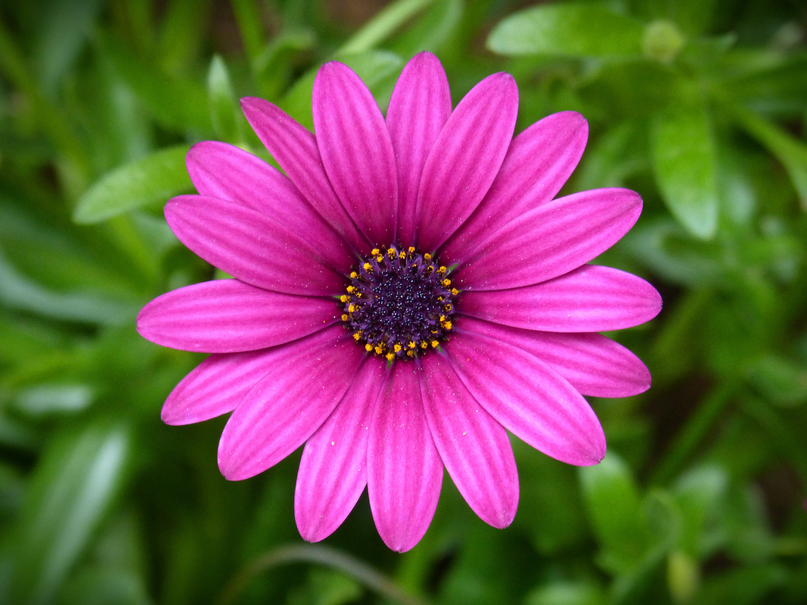
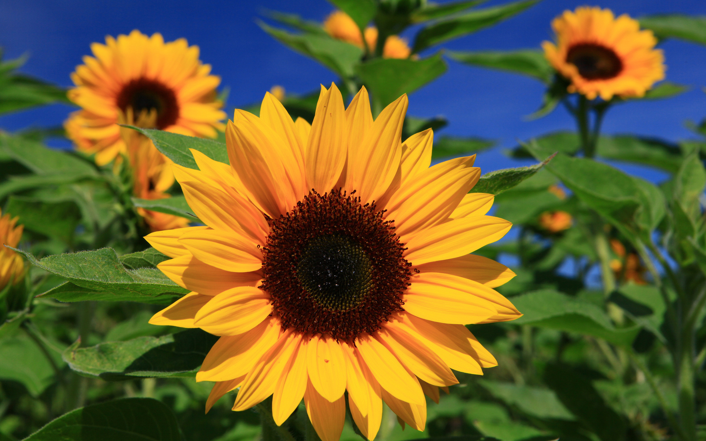
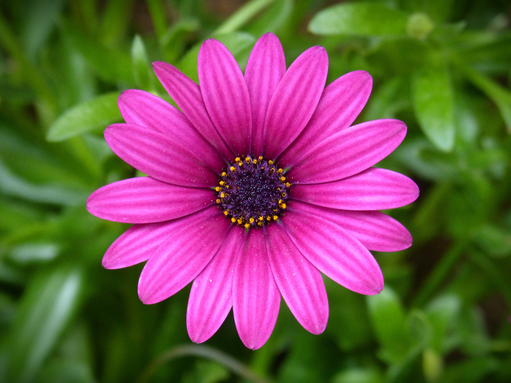
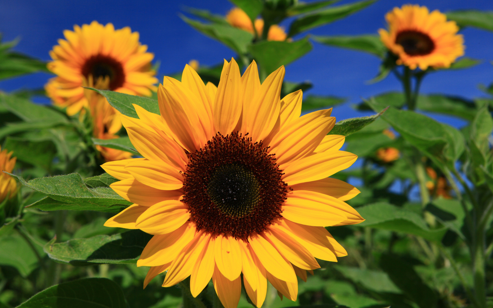

Imagenes de flores:
 




Tipos de Flores
- Rosas
- Tulipanes
- Tulipán Amarillo
- Tulipán Rosa
- Margaritas
- Margarita Blanca
- Margarita Amarilla
- Girasoles
- Girasol Gigante
- Girasol enano
Mis flores favoritas
- Orquídeas
- Gardenias
- Lirios
Definiciones relacionadas con las flores
- Pétalo [Wikipedia]
- Parte colorida de una flor que atrae a los polinizadores.
- Polen [Wikipedia]
- Sustancia en las flores que permite la fertilización.
- Estambre [Wikipedia]
- Órgano reproductor masculino de la flor.
- Floración [Wikipedia]
-
El proceso de florecimiento ocurre en distintas estaciones:
Imagen con áreas clickeables